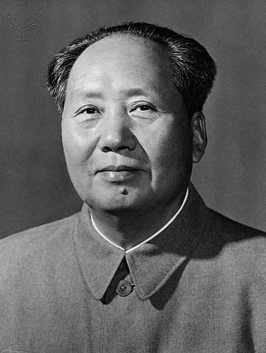

Sumber- Mao Zedong (1893–1976) adalah seorang pemimpin revolusioner, politisi, dan pendiri Republik Rakyat Tiongkok (RRT). Berikut adalah beberapa poin penting tentang hidup dan pengaruhnya:
Lahir pada 26 Desember 1893, di sebuah desa kecil di provinsi Hunan, Tiongkok. Mao berasal dari keluarga petani, tetapi dia mendapatkan pendidikan di sekolah-sekolah tradisional dan sempat bekerja di perpustakaan.
Mao bergabung dengan Partai Komunis Tiongkok (PKT) pada 1921, yang saat itu baru didirikan. Pada 1930-an, selama Perang Saudara Tiongkok, Mao memimpin Tentara Merah dalam perjuangannya melawan pasukan Kuomintang (KMT) yang dipimpin oleh Chiang Kai-shek. Long March (1934-1935): Mao dan pasukannya melakukan perjalanan jauh melintasi Tiongkok untuk menghindari pengepungan oleh pasukan KMT, yang membuatnya semakin terkenal sebagai pemimpin revolusioner yang karismatik.
Pada 1 Oktober 1949, setelah kemenangan PKT dalam perang saudara, Mao mendeklarasikan berdirinya Republik Rakyat Tiongkok dan menjadi pemimpin pertama negara tersebut. Maoisme: Ideologi yang dikembangkan Mao, yang menekankan revolusi petani sebagai kekuatan utama dalam perubahan sosial, serta penolakan terhadap kapitalisme dan imperialisme. Peran dalam Politik Tiongkok: Selama masa kepemimpinan Mao, dia memperkenalkan sejumlah kebijakan untuk mengubah Tiongkok menjadi negara sosialis, termasuk nasionalisasi industri dan kolektivisasi pertanian.
1. Lompatan Jauh ke Depan (1958-1962): Program ambisius untuk mempercepat industrialisasi Tiongkok dengan mengalihkan tenaga kerja dari pertanian ke produksi industri. Kebijakan ini berakhir dengan kekurangan pangan massal dan kelaparan besar, yang menyebabkan kematian jutaan orang.
2. Revolusi Kebudayaan (1966-1976): Sebuah kampanye besar untuk menghapuskan elemen-elemen yang dianggap kapitalis dan tradisional di masyarakat Tiongkok, termasuk orang-orang yang dianggap "musuh" ideologi komunis. Mao mendukung Pasukan Merah, kelompok pemuda yang melakukan aksi kekerasan terhadap individu, intelektual, dan pemimpin yang dianggap kontra-revolusioner.
Pemimpin Totaliter: Selama kepemimpinannya, Mao mengembangkan kultus kepribadian yang besar, di mana dirinya dianggap sebagai pemimpin yang tidak tergantikan dan penuh kebijaksanaan. Kebijakan yang Kontroversial: Beberapa kebijakan, terutama Lompatan Jauh ke Depan dan Revolusi Kebudayaan, menyebabkan bencana besar bagi ekonomi dan kehidupan sosial Tiongkok. Revolusi Kebudayaan mengakibatkan hilangnya banyak aset budaya, dan ribuan orang dihukum, dipenjara, atau dibunuh. Kematian dan Legasi Mao Zedong meninggal pada 9 September 1976. Peninggalan Mao tetap sangat besar, baik di dalam maupun luar Tiongkok. Meskipun kebijakan-kebijakan Mao sering dipandang kontroversial dan merusak, banyak yang masih menghormatinya sebagai simbol perjuangan rakyat Tiongkok melawan imperialisme dan feodalisme. Setelah kematian Mao, Tiongkok mengalami perubahan besar di bawah pemimpin seperti Deng Xiaoping, yang memperkenalkan reformasi ekonomi dan membuka Tiongkok ke dunia luar. Mao Zedong tetap menjadi tokoh yang sangat kompleks dalam sejarah Tiongkok dan dunia, dihormati oleh sebagian orang sebagai pemimpin revolusioner, tetapi juga dikritik karena kebijakan yang menyebabkan penderitaan besar bagi rakyat Tiongkok.